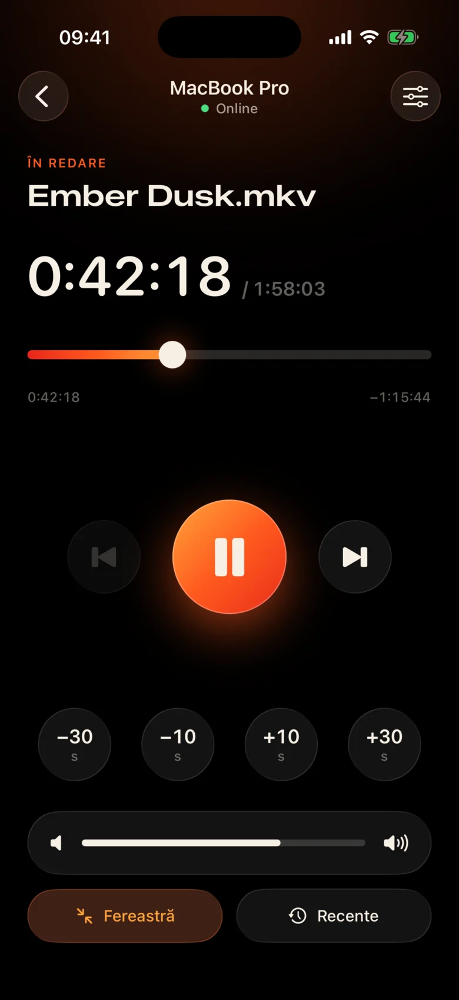
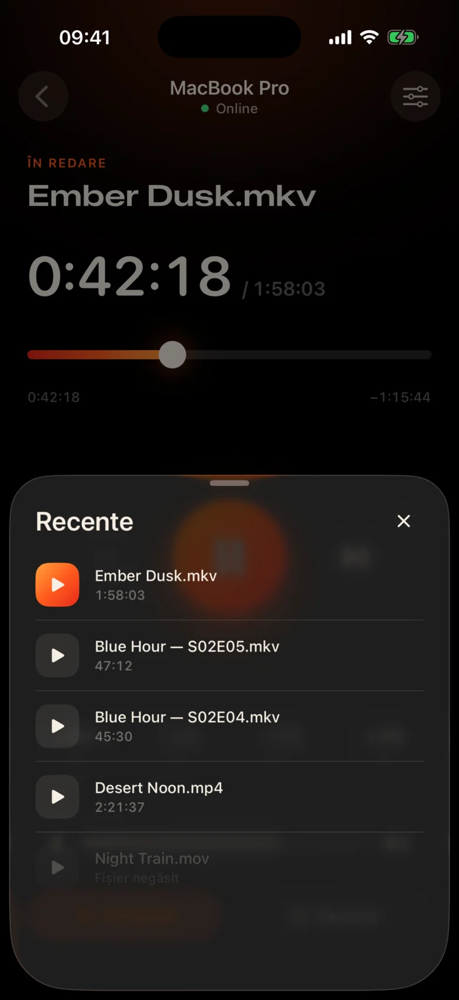
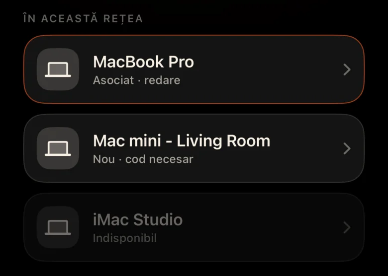
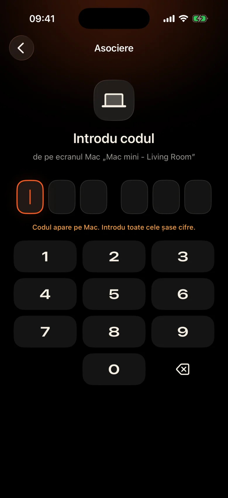

Mac este dincolo de cameră
Este conectat la proiector de perete. Fiecare pauză înseamnă să te ridici, să găsești trackpad-ul în întuneric și să strâmb din ochi la o bară de control minusculă.
Kinrox: atingeți pauză pe telefonul din mână.
Kinrox redă orice videoclip de pe Mac și transformă iPhone în telecomandă. MacBook pe proiector, tu pe canapea: întrerupeți, săriți înapoi cu 10 secunde, reduceți volumul sau începeți episodul următor fără a părăsi pătura.


Este conectat la proiector de perete. Fiecare pauză înseamnă să te ridici, să găsești trackpad-ul în întuneric și să strâmb din ochi la o bară de control minusculă.
Kinrox: atingeți pauză pe telefonul din mână.
Șoapte într-o scenă, explozii în următoarea - și cineva doarme deja în camera alăturată.
Kinrox: un glisor de volum chiar sub degetul mare.
Panouri web cu adrese IP și parole, o filă de browser care adoarme, butoane create pentru un birou – nu pentru o canapea.
Kinrox: găsește dvs. Mac singur, se asociază cu un singur cod.

Ținte mari, o temă întunecată și caldă și o atingere ușoară de haptic sub fiecare apăsare. Îl poți folosi fără să te uiți de la film.
Comenzile sunt suficient de mari pentru a le apăsa chiar și pe jumătate adormit.
Ați ratat o linie? O apăsare înapoi. Sari peste introducerea cu doi.
Volumul propriu al lui Kinrox, de la 0 la 100. Volumul sistemului Mac rămâne neatins.
Fișierul anterior și următorul din același dosar, în Finder ordine.
Alegeți ceva pe care l-ați vizionat înainte — se deschide pe Mac.
Trageți cronologia în orice moment, comutați ecranul complet de pe canapea.
Fără adrese IP, fără parole, fără cont. După primul cod, iPhone se reconecta de la sine.
Trageți un fișier în Kinrox sau apăsați pe ⌘ O. Serverul la distanță este activat în mod implicit.
Kinrox apare singur atunci când ambele dispozitive sunt pe același Wi-Fi.

Mac arată un cod care durează două minute. Trei încercări greșite și a dispărut.


Alex’s iPhone dorește să controleze Kinrox. Introdu codul pe telefon.
 Codul expiră în 1:47
Codul expiră în 1:47
Videoclipul este interfața. Un strat subțire de sticlă apare când aveți nevoie și se ascunde după trei secunde.

Construit pe libmpv, motorul din spatele mpv și IINA. Alegeți audio și subtitrări încorporat sau extern. VideoToolbox se ocupă de decodarea hardware.
Kinrox aliniază videoclipurile din dosar și începe următorul când se termină un episod — „2” înainte de „10”, cum ar fi Finder.
Tastele de la tastatură ⏯, Control Center și Now Playing control Kinrox. Până la 20 de fișiere recente așteaptă pe ecranul de pornire.
Mac și iPhone schimbă comenzile de redare direct prin rețeaua locală. Videoclipurile dvs. rămân pe Mac.
Descoperire prin Bonjour, conexiuni numai din propria subrețea. Adresele publice și telefonul celular sunt refuzate.
Fiecare comandă circulă pe un canal criptat. Jetoanele de împerechere trăiesc în brelocul de pe ambele dispozitive.
X25519HKDF-SHA256ChaCha20-Poly1305Fără conturi sau analize de utilizare. Mac verifică zilnic un feed de actualizare public fără identificatori unici sau profilare de sistem. Acest site web nu are analize sau cookie-uri.
Telecomanda vede titlurile și duratele, niciodată căile fișierelor. Deschiderea unui fișier recent este rezolvată pe Mac.
Kinrox este scris în Swift 6 și SwiftUI deasupra lui libmpv. Fiecare linie a playerului, a telecomenzii și a protocolului este activată GitHub.
Construiți din sursă# Xcode 26.5, XcodeGen and mpv from Homebrew
brew install xcodegen mpv pkg-config
git clone https://github.com/awaik/Kinrox.git
cd Kinrox
cp -n Config/Signing.local.xcconfig.example \
Config/Signing.local.xcconfig
# Set your team: docs/runbooks/RUNBOOK-BUILD-AND-SIGNING.md
./Scripts/check-env.sh
./Scripts/generate.sh
xcodebuild -workspace Kinrox.xcworkspace \
-scheme PlayerMac -configuration Debug \
-destination 'platform=macOS,arch=arm64' \
-derivedDataPath DerivedData build
open DerivedData/Build/Products/Debug/Kinrox.appRedarea și controlul de la distanță funcționează fără acces la internet atunci când Mac și iPhone partajează o rețea Wi-Fi. Mac folosește HTTPS pentru verificări zilnice de actualizare și descarcă o actualizare atunci când alegeți să o instalați.
Da. Kinrox se redă pe orice emisiune dvs. Mac — un proiector, un televizor prin HDMI sau un afișaj conectat la AirPlay.
Macs cu Apple silicon pe macOS 14 Sonoma sau mai târziu și iPhones pe iOS 17 sau mai târziu. Intel Macs nu sunt încă acceptate.
Da. Fiecare iPhone se asociază o dată cu propriul cod; pot fi conectate până la patru telecomenzi în același timp. Puteți revoca oricare dintre ele din setările playerului.
Da. Pe Mac, folosiți butonul Audio și subtitrări sau meniurile Audio și Subtitrări. Alegeți melodiile încorporate, găsiți fișiere externe în foldere imbricate sau dezactivați subtitrările. Kinrox își poate aminti alegerea ta pentru episodul următor.
Nimic. Kinrox este gratuit și open source conform GNU GPL v3.
Kinrox pentru Mac și iPhone. Gratuit, open source și creat pentru seri de film.